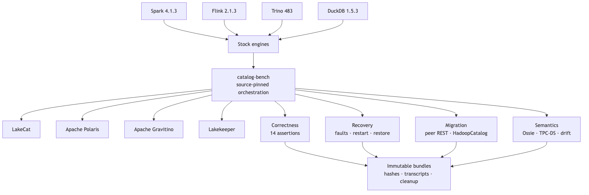

Figure 4. catalog-bench separates stock-engine correctness, recovery, migration, and semantic evidence while retaining one immutable artifact discipline.
catalog-bench is maintained outside the LakeCat source tree under the QueryGraph organization. This separation does not make it automatically neutral, but it makes shared profiles, expected results, and catalog adapters reviewable without embedding them in a system under test. Each run records exact repository revisions, released engine/catalog versions, configuration, assertions, raw transcripts, sanitization, cleanup, and SHA-256 indexes.
The completed stock-engine campaign used:
| Layer | Pinned versions in the accepted runs |
|---|---|
| Catalogs | LakeCat source revisions per fix; Apache Polaris 1.7.0; Apache Gravitino 1.3.0; Lakekeeper 0.13.3 |
| Engines | Spark 4.1.3; Flink 2.1.3; Trino 483; DuckDB 1.5.3 |
| Iceberg runtime | 1.11.0 for Spark, Flink, and Trino |
| Storage | Shared run-isolated MinIO object storage |
| Semantic fixture | Pinned Apache Ossie TPC-DS model and stock Spark physical run |
Stock means that each engine uses its released Iceberg REST integration rather than a LakeCat-specific client shim. Catalog-specific deployment and authentication configuration remain necessary and are disclosed. All catalog instances receive isolated state, and cleanup is asserted.
The common engine workload exercises namespace and table creation, writes, reads, schema evolution, partition evolution where supported by the path, independent state inspection, response sanitization, and cleanup. Fourteen required assertions are evaluated per catalog/engine combination. The harness does not treat an HTTP 2xx alone as correctness: independent reads and metadata inspection confirm the resulting table state.
The recovery campaign adds deterministic object/network faults, response loss, mid-request service restart, transactional outbox outage and replay, and cold restore from run-owned persistent volumes. Migration campaigns use stock PyIceberg to register exact metadata pointers in both directions between LakeCat and Polaris and between LakeCat and Lakekeeper. A separate stock Spark HadoopCatalog workload evolves snapshots, partition specs, and refs before registering the exact pointer in LakeCat.
The benchmark is an unranked correctness matrix. It does not report QPS, latency percentiles, resource efficiency, or a winner. The TPC-DS fixture is used to create realistic physical and semantic structure, not to claim an audited TPC-DS result. The TPC organization requires specific disclosure and fair-use conditions for compliant results [8]; the present experiment neither runs nor names itself as such a performance result.